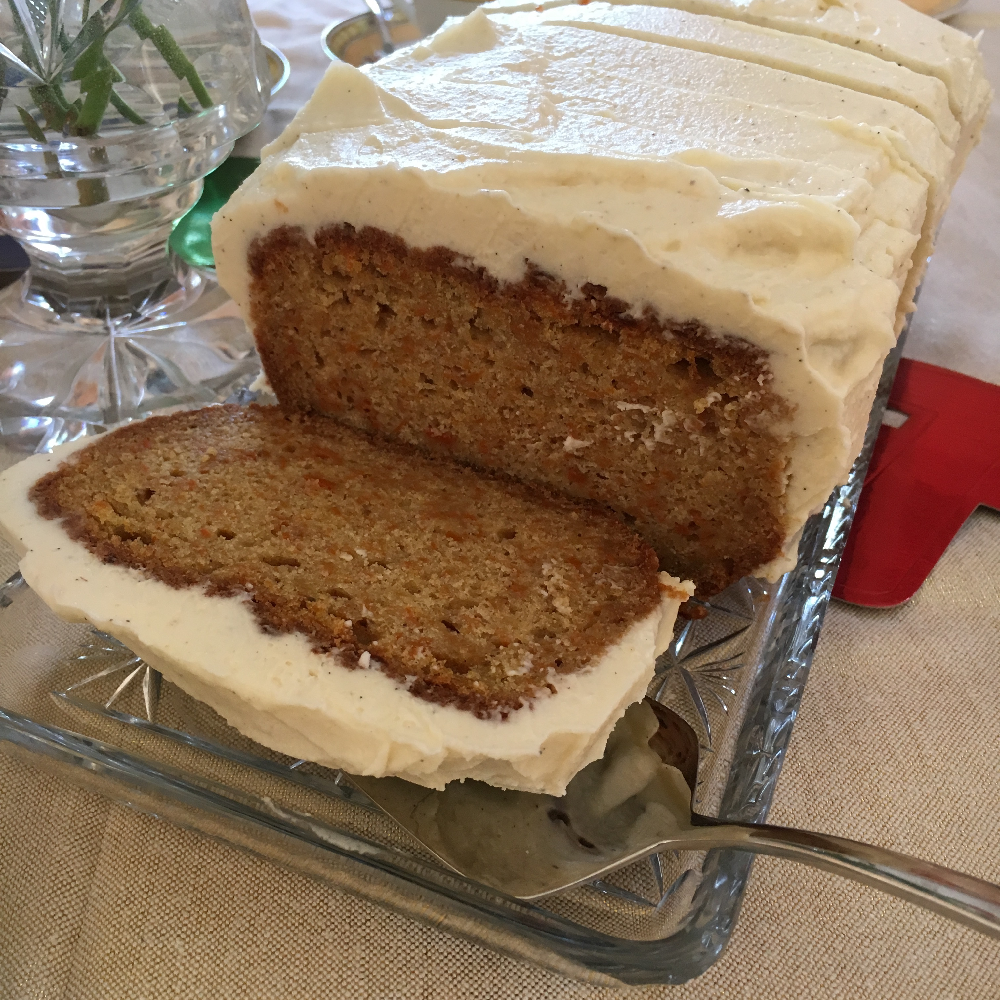
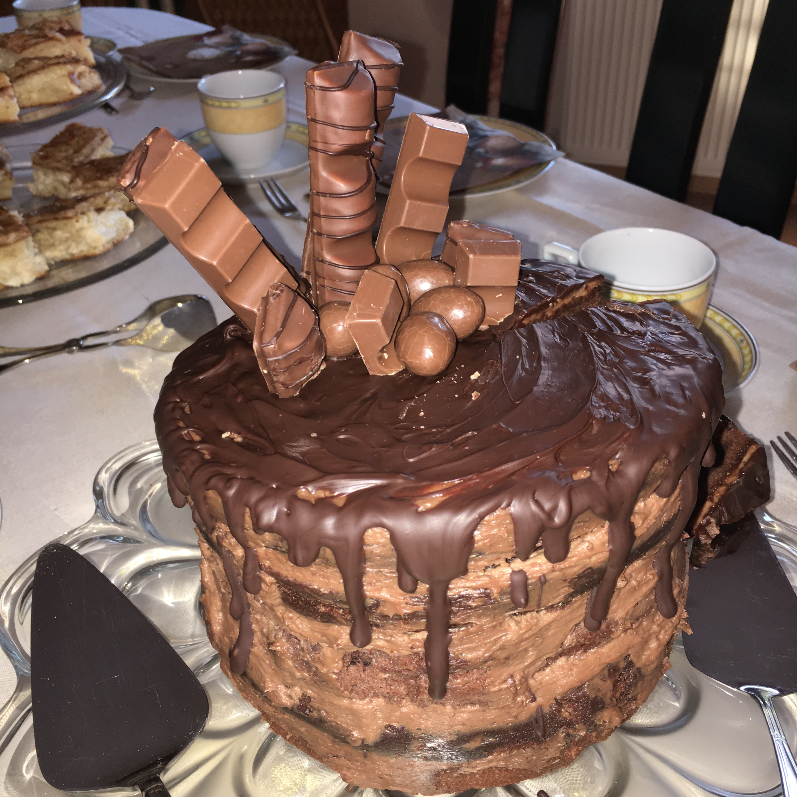

Livingthesweetdream
Neueste Rezepte
Carrot-Cake
Carrot-Cake
Eines meiner absoluten Lieblingsrezepte, ob im Sommer oder Winter. Das Frischkäse-Topping ist wunderbar leicht und gibt dem "gesunden" Kuchen die perfekte Süße.Schokotraum
Dieser Schokotraum ist der Renner auf jedem Kuchenbuffet